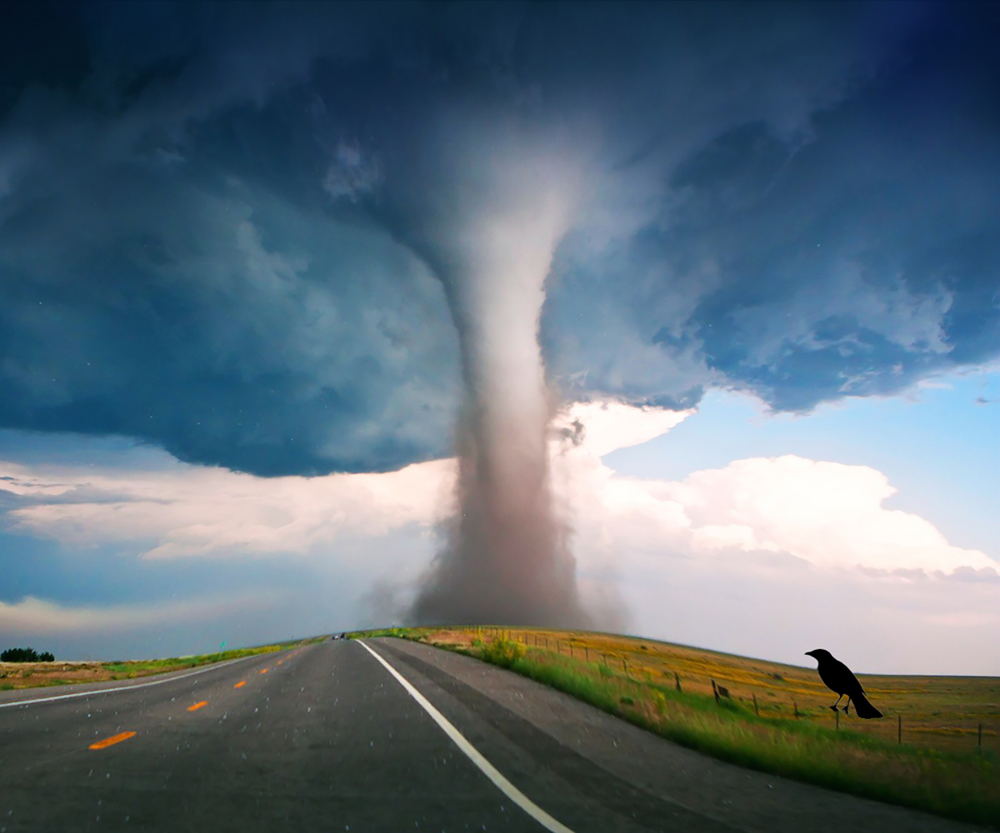
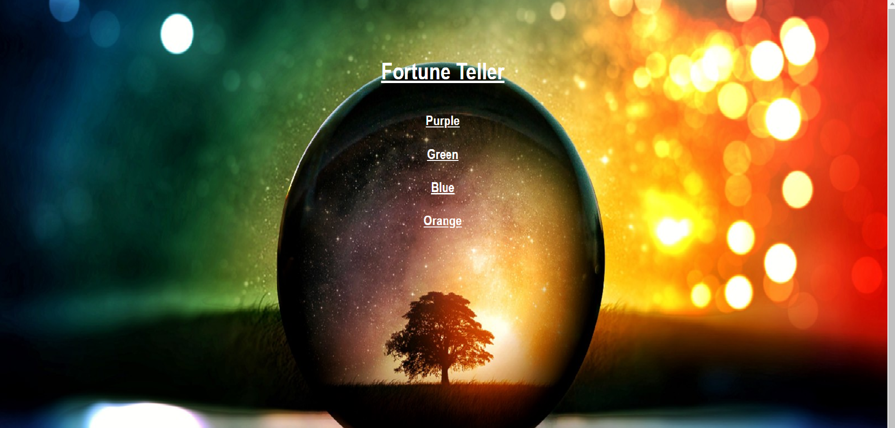
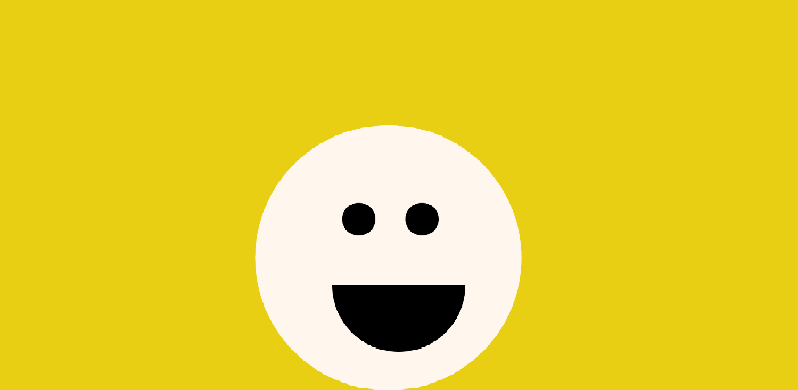

Home, Digital Image,2018
This piece was inspired by what reminds me of home. One of the very few trees I see in my school and when I get home is a Jacaranda Tree.
I absolutly love it because it is usually green during the fall and winter, but in the spring time the trees turn into a beautiful lavender purple.
I made the tree into a glitch looking like a rainbow because the tree reminds me of the beauty the world brings.

Gentrification, Digital Image, 2018
This image was inspired by the things that are going on in my hometown, Los Angeles.
I wanted to include how there are cities that are home to alot of minorities, which are now being gentrified my white America.
I usually know gentrification is occuring when a surplus of Starbucks' are being built in almost every other cornor street.
It is a sad thing that happens, but is going to continue to occur in America as long as it keeps growing.

Tornado Warning, Digital Sound, 1:00, 2018
This sound was incorporates tornado warning sirens, bird chirping, shoe scraping, and thunder sounds. These sounds were inspired by the natural
disasters that happen all around the world. I wanted to convey how an ordinary day can turn into a life changing catastrophe.
click the link here
Graphics Collage, Digital Video, 1:15, 2018
This video is includes multiple differnt moving backgrounds. I wanted to make a collage thorugh different movements within a picture.
The video is comprised of different videos brought into one.
click the link here

Fortune Teller, Interactive Net Art, 2018
This net art ptoject was inspired by sme childhood games I encountered when growing up. I wanted to make an fortune teller that would
typically be on paper an online game. Pick wisely for your fortune may be positive or a negative.
click the link here

Everyday, Interactive Net Art using p5.js, 2018
While figuring out what I wanted to do for this project I simply started making happy faces. I realized that alot of time people
put on a facade. People always look like they are happy when in reality deep down most people aren't happy. This project was inspired
by that and how everyday we put on a face smile
click the link here

Welcome Home, Digital Sound, 3:17, 2018
The concept I chose for the project is based on gentrification. I based it on my experience with it where I live (Los Angeles, California),
but also how it seems to be happening all around the country.I thought,through an artist's perspective, that it would challenging, yet interesting
coming up sounds to convey gentrification.
click the link here